Logic and Proof
27 The Real Numbers
27.1 The Number Systems
We have already come across some of the fundamental number systems:
the natural numbers,  , the integers,
, the integers,  , and the rationals,
. In a sense, each subsequent element of the list was designed to
remedy defects in the previous system: we can subtract any integer
from any other integer and end up with another integer, and we can
divide any rational number by a nonzero rational number and end up
with a rational number.
, and the rationals,
. In a sense, each subsequent element of the list was designed to
remedy defects in the previous system: we can subtract any integer
from any other integer and end up with another integer, and we can
divide any rational number by a nonzero rational number and end up
with a rational number.
The integers satisfy all of the following properties:
- Addition is associative and commutative.
- There is an additive identity,
 , and every element
, and every element  has an
additive inverse, .
has an
additive inverse, . - Multiplication is associative and commutative.
- There is a multiplicative identity,
 .
. - Multiplication distributes over addition: for every ,
 , and
, and
 , we have .
, we have . - The ordering
 is a total order.
is a total order. - For any elements , , and , if then .
- For any elements and , if and then .
The first five clauses say that with  ,
,  , , and , the
integers form a commutative ring, and the last three say that
together with , the structure is an ordered ring. The natural
numbers lack additive inverses, so they satisfy a slightly weaker set
of axioms that make them an ordered semiring. On the other hand, the
rational numbers also form an ordered ring, satisfying the following
additional property:
, , and , the
integers form a commutative ring, and the last three say that
together with , the structure is an ordered ring. The natural
numbers lack additive inverses, so they satisfy a slightly weaker set
of axioms that make them an ordered semiring. On the other hand, the
rational numbers also form an ordered ring, satisfying the following
additional property:
- Every nonzero element has a multiplicative inverse, .
This makes them an instance of an ordered field.
It is worth knowing that once we have the natural numbers, it is
possible to construct the integers and rational numbers, using
set-theoretic constructions you have already seen. For example, we can
take an integer to be a pair of natural numbers where  is
either 0 or 1, with the intention that represents the
positive integer
is
either 0 or 1, with the intention that represents the
positive integer  , and represents the negative integer
, and represents the negative integer
 . (We use instead of
. (We use instead of  to avoid having two
representations of .) With this definition, the integers are simply
. We can then go on to define the operations of
addition and multiplication, the additive inverse, and the order
relation, and prove they have the desired properties.
to avoid having two
representations of .) With this definition, the integers are simply
. We can then go on to define the operations of
addition and multiplication, the additive inverse, and the order
relation, and prove they have the desired properties.
This construction has the side effect that the natural numbers themselves are not integers; for example, we have to distinguish between the natural number 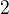, and the integer . In Lean, for example, this is the case. In ordinary mathematics, it is common to think of the natural numbers as a subset of the integers. Once we construct the integers, however, we can throw away the old version of the natural numbers, and afterwards identify the natural numbers as nonnegative integers.
We can do the same for the rationals, defining them to be the set of
pairs 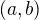 in , where either and ,
or and  and
and  have no common divisor (other than and
have no common divisor (other than and
 ). The idea is that represents
). The idea is that represents  . With this
definition, the rationals are really a subset of , and
we can then define all the operations accordingly.
. With this
definition, the rationals are really a subset of , and
we can then define all the operations accordingly.
In the next section, we will define a more sophisticated approach, one which will scale to a definition of the real numbers. And in a later chapter, we will show how to construct the natural numbers from the axioms of set theory. This shows that we can construct all the number systems from the bottom up.
But first, let us pause for a moment to consider why the real numbers
are needed. We have seen that has no rational square root. This
means, in a sense, that there is a "gap" in the rationals: the are
rationals whose squares are arbitrarily close to 2, but there is no
rational with the property that . But it seems
intuitively clear that there should be some number with that
property:  is the length of the diagonal of a square with
side length . Similarly, , the area of a circle with radius 1,
is missing from the rationals. These are the kinds of defects that
the real numbers are designed to repair.
is the length of the diagonal of a square with
side length . Similarly, , the area of a circle with radius 1,
is missing from the rationals. These are the kinds of defects that
the real numbers are designed to repair.
You may be used to thinking of real numbers as (potentially) infinite
decimals: for example, and . A central goal of this chapter is to make the "…"
precise. The idea is that we can take an infinite decimal to represent
a sequence of rational approximations. For example, we can approximate
the square root of 2 with the sequence .
We would like to define to be the "limit" of that sequence,
but we have seen that the sequence does not have a limit in the
rationals. So we have to construct new objects, the real numbers, to
serve that purpose.
In fact, we will define the real numbers, more or less, to be such sequences of rational approximations. But we will have to deal with the fact that, for example, there are lots of ways of approximating the square root of two. For example, we can just as well approach it from above, , or by oscillating above and below. The next section will show us how to "glue" all these sequences together and treat them as a single object.
27.2 Quotient Constructions
Let  be any set, and let
be any set, and let  be any equivalence relation on
. Recall from Chapter 11 that we can assign to every element of
the equivalence class
be any equivalence relation on
. Recall from Chapter 11 that we can assign to every element of
the equivalence class  , where means
, where means  . This assignment has the property that for every and ,
. This assignment has the property that for every and ,  if and only if
if and only if  .
.
Given any set and equivalence relation , define  to be the set of
equivalence classes of modulo . This set is called "
modulo
to be the set of
equivalence classes of modulo . This set is called "
modulo  ," or the quotient of by . You
can think of this as the set where equivalent elements are "glued
together" to make a coarser set.
," or the quotient of by . You
can think of this as the set where equivalent elements are "glued
together" to make a coarser set.
For example, if we consider the integers with denoting
equivalence modulo 5 (as in Chapter 19), then
is just . We can define addition on
by  . For this definition
to make sense, it is important to know that the right-hand side does
not depend on which representatives of and we choose. In
other words, we need to know that whenever and , then . This, in turn, is equivalent to
saying that if and , then . In other words, we require that the operation of addition
respects the equivalence relation, and we saw in Chapter 19 that
this is in fact the case.
. For this definition
to make sense, it is important to know that the right-hand side does
not depend on which representatives of and we choose. In
other words, we need to know that whenever and , then . This, in turn, is equivalent to
saying that if and , then . In other words, we require that the operation of addition
respects the equivalence relation, and we saw in Chapter 19 that
this is in fact the case.
This general strategy for transferring a function defined on a set to a function defined on a quotient of that set is given by the following theorem.
Theorem. Let and  be any sets, let be any
equivalence relation defined on , and let
be any sets, let be any
equivalence relation defined on , and let  . Suppose
. Suppose
 respects the equivalence relation, which is to say, for every
and in , if , then . Then there is
a unique function , defined by
for every in .
respects the equivalence relation, which is to say, for every
and in , if , then . Then there is
a unique function , defined by
for every in .
Proof. We have defined the value of on an equivalence class
by writing , and setting . In other
words, we say that if and only if there is an such
that , and . What is dubious about the definition
is that, a priori, it might depend on how we express in that form;
in other words, we need to show that there is a unique meeting
this description. Specifically, we need to know that if
, then . But since is
equivalent to , this amounts to saying that respects
the equivalence relation, which is exactly what we have assumed.
Mathematicians often "define" by the equation  , and then express the proof above as a proof that " is
well defined." This is confusing. What they really mean is what the
theorem says, namely, that there is a unique function meeting that
description.
, and then express the proof above as a proof that " is
well defined." This is confusing. What they really mean is what the
theorem says, namely, that there is a unique function meeting that
description.
To construct the integers, start with  . Think of the
pair of natural numbers as representing
. Think of the
pair of natural numbers as representing  , where the
subtraction takes place in the integers (which we haven't constructed
yet!). For example, both
, where the
subtraction takes place in the integers (which we haven't constructed
yet!). For example, both  and 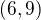 represent the integer
. Intuitively, the pairs and
and 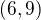 represent the integer
. Intuitively, the pairs and  will represent
the same integer when
will represent
the same integer when  , but we cannot say this yet,
because we have not yet defined the appropriate notion of
subtraction. But the equation is equivalent to
, but we cannot say this yet,
because we have not yet defined the appropriate notion of
subtraction. But the equation is equivalent to  , and
this makes sense with addition on the natural numbers.
, and
this makes sense with addition on the natural numbers.
Definition. Define the relation on  by if and only if .
by if and only if .
Proposition. is an equivalence relation.
Proof. For reflexivity, it is clear that , since .
For symmetry, suppose . This means . But the symmetry of equality implies , as required.
For transitivity, suppose , and  . Then we have and . Adding these equations, we get
. Then we have and . Adding these equations, we get
Subtracting from both sides, we get ,
which is equivalent to  , as required.
, as required.
We can now define the integers to be . How should we define addition? If 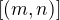
represents , and  represents , then should represent . Thus, it makes
sense to define
represents , then should represent . Thus, it makes
sense to define  to be
to be  . For
this to work, we need to know that the operation which sends
and 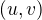 to respects the equivalence relation.
. For
this to work, we need to know that the operation which sends
and 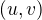 to respects the equivalence relation.
Proposition. If and , then .
Proof. The first equivalence means , and the second
means 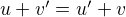. Adding the two equations, we get , which is exactly the same as
saying .
Every natural number can be represented by the integer  ,
and, in particular, is represented by . Moreover, if
is any integer, we can define its negation to be , since , since
. In short, we have "invented" the
negative numbers!
,
and, in particular, is represented by . Moreover, if
is any integer, we can define its negation to be , since , since
. In short, we have "invented" the
negative numbers!
We could go on this way to define multiplication and the ordering on
the integers, and prove that they have the desired properties. We
could also carry out a similar construction for the rational
numbers. Here, we would start with the set ,
where denotes the strictly positive integers. The idea, of
course, is that represents  . With that in mind, it
makes sense to define if . We could
go on to define addition, multiplication, and the ordering there,
too. The details are tedious, however, and not very illuminating. So
we turn, instead, to a construction of the real numbers.
. With that in mind, it
makes sense to define if . We could
go on to define addition, multiplication, and the ordering there,
too. The details are tedious, however, and not very illuminating. So
we turn, instead, to a construction of the real numbers.
27.3 Constructing the Real Numbers
The problem we face is that the sequence of rational numbers seems to approach a value that would be the square root of 2, but there is no rational number that can play that role. The next definition captures the notion that this sequence of numbers "seems to approach a value," without referring to a value that it is approaching.
Definition. A sequence of rational numbers  is
Cauchy if for every rational number
is
Cauchy if for every rational number  , there is some
natural number such that for all , we have
that .
, there is some
natural number such that for all , we have
that .
Roughly speaking, a Cauchy sequence is one where the elements become
arbitrarily close, not just to their successors but to all following
elements. It is common in mathematics to use to represent
a quantity that is intended to denote something small; you should read
the phrase "for every " as saying "no matter how
small is." So a sequence is Cauchy if, for any
, no matter how small, there is some point ,
beyond which the elements stay within a distance of of
one another.
Cauchy sequences can be used to describe these gaps in the rationals, but, as noted above, many Cauchy sequences can be used to describe the same gap. At this stage, it is slightly misleading to say that they "approach the same point," since there is no rational point that they approach; a more precise statement is that the sequences eventually become arbitrarily close.
Definition. Two Cauchy sequences and are equivalent if for every rational number
, there is some natural number such that
for all , we have that . We will
write to express that  is equivalent to.
is equivalent to.
Proposition. is an equivalence relation on
Cauchy sequences.
Proof. Reflexivity and symmetry are easy, so let us prove
transitivity. Suppose and . We want to show that the sequence is equivalent to
. So, given any , choose large enough
such that for every , . Choose another number, , so that for every , . Let . Then
for every , we have
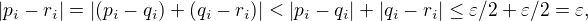
as required.
Notice that the proof uses the triangle inequality, which states for
any rational numbers and ,  . If we
define
. If we
define  to be the maximum of and , the triangle
inequality in fact holds for any ordered ring:
to be the maximum of and , the triangle
inequality in fact holds for any ordered ring:
Theorem. Let and be elements of any ordered ring. Then .
Proof. By the definition of absolute value, it suffices to show that
and . The first claim
follows from the fact that  and . For the
second claim, we similarly have and , so
.
and . For the
second claim, we similarly have and , so
.
In the theorem above, if we let 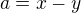 and , we get
. The fact that represents
the distance between and on the number line explains the name:
for any three "points" , , and , the distance from to
can't be any greater than the distance from to plus the
distance from to .
We now let be the set of Cauchy sequences of rationals, and define
the real numbers,  , to be
, to be  . In other words,
the real numbers are the set of Cauchy sequence of rationals, modulo
the equivalence relation we just defined.
. In other words,
the real numbers are the set of Cauchy sequence of rationals, modulo
the equivalence relation we just defined.
Having the set by itself is not enough: we also would like to
know how to add, subtract, multiply, and divide real numbers. As with
the integers, we need to define operations on the underlying set, and
then show that they respect the equivalence relation. For example, we
will say how to add Cauchy sequences of rationals, and then show that
if and , then . We can then lift this definition to by defining to be 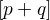.
Luckily, it is easy to define addition, subtraction, and
multiplication on Cauchy sequences. If and  are Cauchy sequences, let , and similarly for subtraction and multiplication. It is
trickier to show that these sequences are Cauchy themselves, and to
show that the operations have the appropriate algebraic properties. We
ask you to prove some of these properties in the exercises.
are Cauchy sequences, let , and similarly for subtraction and multiplication. It is
trickier to show that these sequences are Cauchy themselves, and to
show that the operations have the appropriate algebraic properties. We
ask you to prove some of these properties in the exercises.
We can identify each rational number with the constant Cauchy sequence , so the real numbers include all the rationals. The next step is to abstract away the details of the particular construction we have chosen, so that henceforth we can work with the real numbers abstractly, and no longer think of them as given by equivalence classes of Cauchy sequences of rationals.
27.4 The Completeness of the Real Numbers
We constructed the real numbers to fill in the gaps in the rationals. How do we know that we have got them all? Perhaps we need to construct even more numbers, using Cauchy sequences of reals? The next theorem tells us that, on the contrary, there is no need to extend the reals any further in this way.
Definition. Let  be a real number. A sequence
be a real number. A sequence  of real numbers converges to if, for every ,
there is an such that for every , .
of real numbers converges to if, for every ,
there is an such that for every , .
Definition. A sequence converges if it
converges to some .
Theorem. Every Cauchy sequence of real numbers converges.
The statement of the theorem is often expressed by saying that the real numbers are complete. Roughly, it says that everywhere you look for a real number, you are bound to find one. Here is a similar principle.
Definition. An element is said to be an upper bound to
a subset if everything in is less
than or equal to  . is said to be bounded if there is an upper
bound to . An element is said to be a least upper bound to
if it is an upper bound to , and nothing smaller than is an
upper bound to .
. is said to be bounded if there is an upper
bound to . An element is said to be a least upper bound to
if it is an upper bound to , and nothing smaller than is an
upper bound to .
Theorem. Let be a bounded, nonempty subset of . Then
has a least upper bound.
The rational numbers do not have this property: if we set  , then the rational number 2 is an upper bound for
, but has no least upper bound in .
, then the rational number 2 is an upper bound for
, but has no least upper bound in .
It is a fundamental theorem that the real numbers are characterized
exactly by the property that they are a complete ordered field, such
that every real number is less than or equal to some natural
number . Any two models that meet these requirements must behave in
exactly the same way, at least insofar as the constants and ,
the operations and , and the relation are
concerned. This fact is extremely powerful because it allows us to avoid
thinking about the Cauchy sequence construction in normal
mathematics. Once we have shown that our construction meets these
requirements, we can take to be "the" unique complete totally
ordered field and ignore any implementation details. We are also free
to implement in any way we choose, and as long as it meets this
interface, and as long as they do not refer to the underlying
representations, any theorems we prove about the reals will hold
equally well for all constructions.
[More needed here.]
27.5 An Alternative Construction
Many sources use an alternative construction of the reals, taking them
instead to be Dedekind cuts. A Dedekind cut is an ordered pair  of sets of rational numbers with the following properties:
of sets of rational numbers with the following properties:
- Every rational number is in either or .
- Each
 is less than every
is less than every  .
. - There is no greatest element of .
- and are both nonempty.
The first two properties show why we call this pair a "cut." The set
contains all of the rational numbers to the left of some mark on
the number line, and all of the points to the right. The third
property tells us something about what happens exactly at that mark.
But there are two possibilities: either has a least element, or it
doesn't. Picturing the situation where has no greatest element and
has no least element may be tricky, but consider the example and 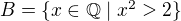. There is
no rational number such that , but there are rational
numbers on either side that are arbitrarily close; thus neither
nor contains an endpoint.
We can define to be the set of Dedekind cuts. A Dedekind cut
corresponds to a rational number if is
the least element of , and to an irrational number if has no
least element. It is straightforward to define addition on :
Some authors prefer this construction to the Cauchy sequence
construction because it avoids taking the quotient of a set, and thus
removes the complication of showing that arithmetic operations respect
equivalence. Others prefer Cauchy sequences since they provide a
clearer notion of approximation: if a real number is given by a
Cauchy sequence , then an arbitrarily close
rational approximation of is given by for a sufficiently
large .
For most mathematicians most of the time, though, the difference
is immaterial. Both constructions create complete linear ordered fields,
and in a certain sense, they create the same complete linear ordered
field. Strictly speaking, the set of Cauchy reals is not equal to the
set of Dedekind reals, since one consists of equivalence classes of
rational Cauchy sequences and one consists of pairs of sets of rationals.
But there is a bijection between the two sets that preserves the field
properties. That is, there is a bijection from the Cauchy reals
to the Dedekind reals such that
- 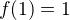
- .
We say that the two constructions are isomorphic, and that the function
is an isomorphism. Since we often only care about the real
numbers in regard to their status as a complete ordered field, and the
two constructions are indistinguishable as ordered fields, it makes
no difference which construction is used.
27.6 Exercises
- Show that addition for the integers, as defined in Section 27.2, is commutative and associative.
- Show from the construction of the integers in Section 27.2 that
for every integer .
- Define subtraction for the integers by , and
show that for every pair of integers and .
- Define multiplication for the integers, by first defining it on the underlying representation and then showing that the operation respects the equivalence relation.
- Show that every Cauchy sequence is bounded: that is, if is Cauchy, there is some rational
 such that for all . Hint: try letting .
such that for all . Hint: try letting . Let and
 be Cauchy
sequences. Define
be Cauchy
sequences. Define  and
and  .
.
a. Show that 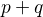 is Cauchy. That is, for arbitrary , show that there exists an such that for all
 , .
, .
b. Show that is Cauchy. In addition to the triangle inequality, you will find the previous exercise useful.
These two parts show that addition of Cauchy sequences respects equivalence.
a. Show that if are Cauchy sequences and , then .
b. Argue, using exercise 1 and the first part of this problem, that if are Cauchy sequences, , and , then .
- Show that if and are Dedekind cuts, then is also a Dedekind cut.